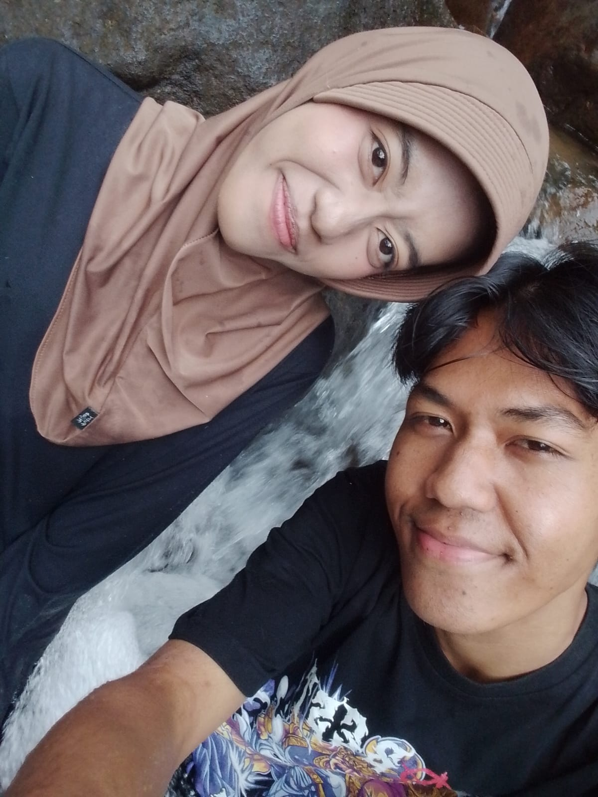

Potongan-potongan kecil yang selalu ingin aku simpan lebih lama.
THE PLACES WE GO
Di tempat favorit, bersama orang favorit.
AN ORDINARY, LOVELY DAY
Momen biasa yang jadi istimewa karena ada kamu.
IN BETWEEN
Satu lagi alasan kecil untuk tersenyum.
ONE FOR THE ALBUM
Semoga nanti kita punya banyak cerita seperti ini.
MY FAVORITE VIEW
Foto kecil, rasa sayang yang besar.
THAT LITTLE SMILE
Senyummu selalu jadi bagian favorit dari hari itu.
ONE TO KEEP
Satu hari yang ingin kusimpan baik-baik.
A QUIET MOMENT
Bersamamu, bahkan jeda terasa menyenangkan.
A DAY TO REMEMBER
Satu foto kecil yang ingin kusimpan baik-baik.
✳ Beberapa potongan hari yang ingin kusimpan dekat.
A FEW MOVING MOMENTS
Little scenes, big feelings.
Kenangan kecil yang rasanya ingin diputar lagi.
A MOMENT TO KEEP
Satu momen kecil, untuk ditonton lagi kapan saja.
US, IN MOTION
Beberapa detik yang menyimpan banyak rasa.
ANOTHER LITTLE MEMORY
Satu lagi cerita kecil yang ingin diputar kembali.
A MOMENT WITH YOU
Kenangan bergerak, supaya rasanya tetap dekat.
03 — OUR LITTLE STORY
A few pages of us.
Beberapa halaman dari cerita yang terus kita tulis bersama.
01
06.06.2026
Sayang ini moment dimana kita pertama kali ke punck cisaat setelah hati kita sama sama berantakan seng, inget kan?dimana di hari itu tu aku masi selalu bahas hal yang ga penting hehehe, tapi akhirnya kita bisa lewatin itu semua.
06Foto untuk cerita iniassets/images/2.jpeg
02
01.08.2026
Ini pertama kalinya kita ke alam sayang, ke curug walaupun malemnya kita berantem dulu tapi akhirnya paginya jadi juga ke curug hahaha.

07Foto untuk cerita iniassets/images/7.jpeg
03
07.11.2025
Ini waktu ngerayain ulang tahun kamu sayang, disini aku ngerasa gagal sayang soalnya kurang pro banget aku nge-suprise nya ih, tapi happy kan seng?
08Foto untuk cerita iniassets/images/9.jpeg
04 — OPEN WHEN YOU'RE READY
A little letter, just for you.
Ada beberapa hal yang ingin kusampaikan pelan-pelan.
ADA PESAN UNTUK KAMU DI HARI INI
Dengan sayang, aku ♡
✳
✳✧✳
05 — A WISH FOR YOU
For all the good things to come.
Semoga kamu selalu sehat, bahagia, dimudahkan dalam setiap langkah, dan dikelilingi hal-hal baik.
Semoga kamu juga selalu punya ruang untuk istirahat, tertawa lepas, dan menikmati hal-hal kecil yang kamu suka. Kamu layak mendapatkan banyak hari yang baik.
✳ ♡ ✳
AND ONE LAST THING
✳
Of all the people in this world, I'm grateful I get to know you.
Happy anniverssary, sayang. Always be happy, okay? ♡